Токио · Гиндза · сладости
«Куя» в Гиндзе: монака, которую ел Сосэки и которую раскупают заранее
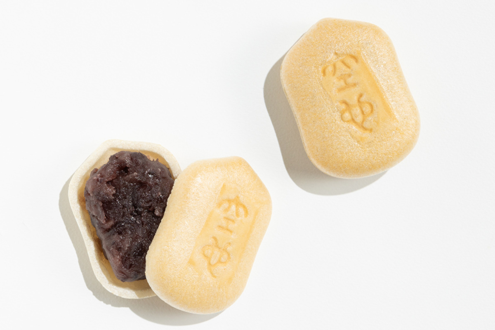
В Японии хватает кондитерских, которым больше ста лет, и от каждой ждут «того самого вкуса». Лавка «Куя» в Гиндзе этот вкус бережёт, но параллельно учит пасту из бобов адзуки новым трюкам и хочет познакомить с ней весь мир.
История
Монака от монаха, писателя и актёра
Главная сладость «Куя» называется «Куя-монака»: две тонкие вафельные оболочки, а между ними щедрый слой зернистой пасты из адзуки. Оболочка у неё не золотистая, как обычно, а светло-коричневая, будто её слегка подержали над огнём. Монаку начали продавать в эпоху Мэйдзи, и с тех пор ни вид, ни вкус почти не поменялись. Довоенные документы лавки сгорели во время войны, поэтому её историю знают по рассказам прежних хозяев и часто передают со словами «говорят, было так».
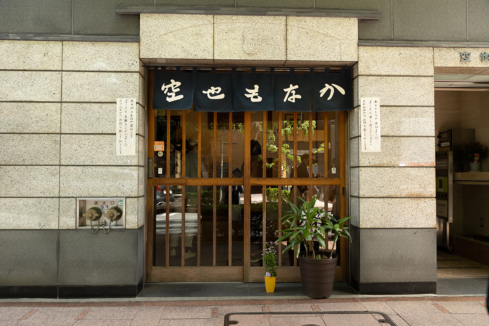
Лавка названа в честь Куя (903–972), буддийского монаха эпохи Хэйан. Он учил, что путь к Будде открыт не только монахам после долгой аскезы, но и мирянам: достаточно от всего сердца повторять «Наму Амида Буцу». Учение разошлось широко, и вокруг него появились весёлые формы проповеди вроде танцев с молитвой. В Канто существовало общество поклонников Куя: зажиточные горожане, которые больше любили петь и танцевать, чем молиться. Основатель лавки был одним из них, и когда ему пришлось начинать новое дело, друзья по обществу сложились и помогли. В благодарность он назвал лавку именем монаха, а форму монаки взял от украшения в виде тыквы-горлянки на посохе Куя.
В 1897 году лавку принял второй хозяин. Он служил у основателя приказчиком, в 23 года стал владельцем и, по рассказам, был очень усерден в работе. Тогда же сюда часто приходил Сосэки Нацумэ (1867–1916), один из главных японских писателей своего времени и известный сладкоежка. Он покупал монаку и рисовые лепёшки «Куя-моти», а лепёшки упомянул в романе «Ваш покорный слуга кот». После этого лавку узнала вся страна как «кондитерскую, которую любит сам Сосэки».
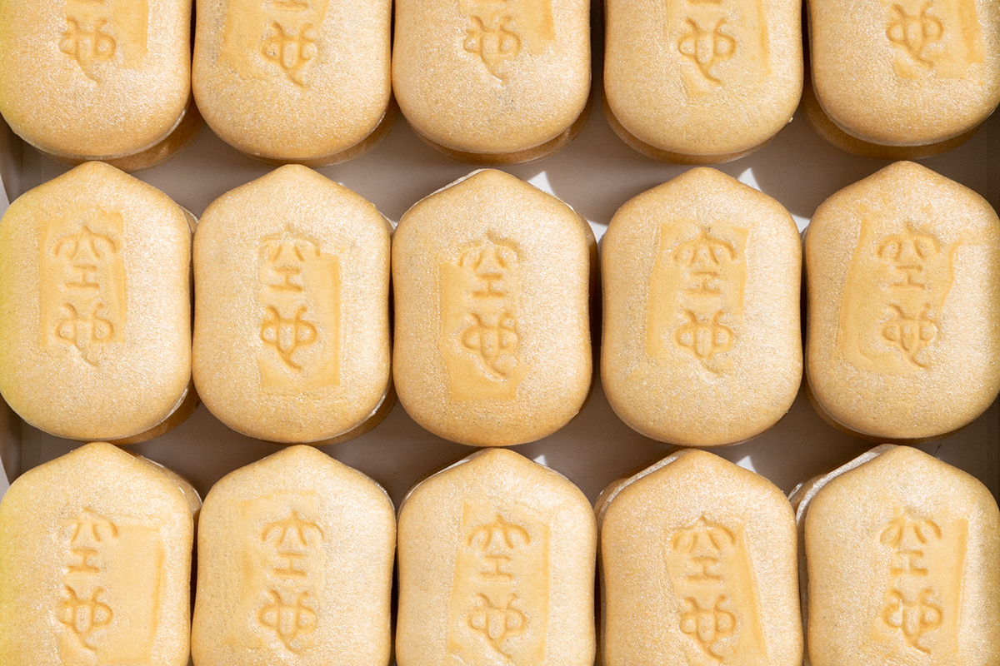
Подрумяненную оболочку, как рассказывают, придумал основатель. Однажды он зашёл к актёру кабуки Дандзюро Итикаве IX (1838–1903), звезде театра эпохи Мэйдзи, и застал его за странным занятием: актёр подогревал на сетке над огнём зачерствевшую монаку. Основатель попробовал, оценил аромат и стал печь оболочки для своей лавки чуть дольше, до лёгкого загара. Так у монаки «Куя» появились поклонники среди писателей и звёзд кабуки, и эта любовь передаётся до сих пор.
Начинка
Паста, которую варят над магазином
Дом, где работает лавка, принадлежит ей самой. После войны, когда «Куя» собиралась открыться заново, знакомый предложил переехать в соседнее здание, и тогдашние хозяева решились купить участок. Это одна из причин, почему лавке больше ста лет удаётся держаться в Гиндзе. Прежняя хозяйка говорила: «Здание своё, поэтому мы и в Гиндзе можем продавать монаку по такой цене».
Свой дом даёт и другое преимущество. Кроме оболочек, которые пекут на стороне, всё делают здесь же: варят пасту, наполняют и собирают сладости. Каждый шаг на виду.
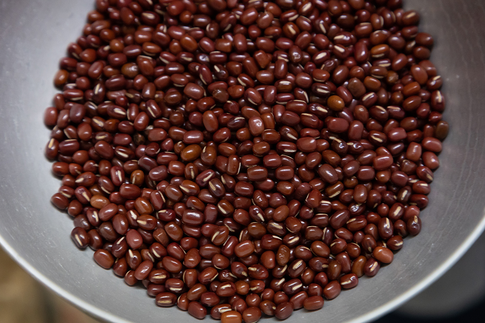
Пасту варят на верхнем этаже. Сахар в неё идёт крупный, кристаллами «дзарамэ»: с ним, как объясняют в лавке, сладость получается лёгкой, а мелкий сахар даёт более резкую. Ещё за десять с лишним лет до 2023 года газовые котлы сменили на индукционные медные: они прогревают пасту со всех сторон и не теряют тепла. Пасту в оболочки тоже закладывает машина. Рецепт, от которого зависит вкус, остался прежним, а способы работы меняются, когда это нужно, и в этом отказе от «старины ради старины» лавка видит одну из причин своей долгой жизни.
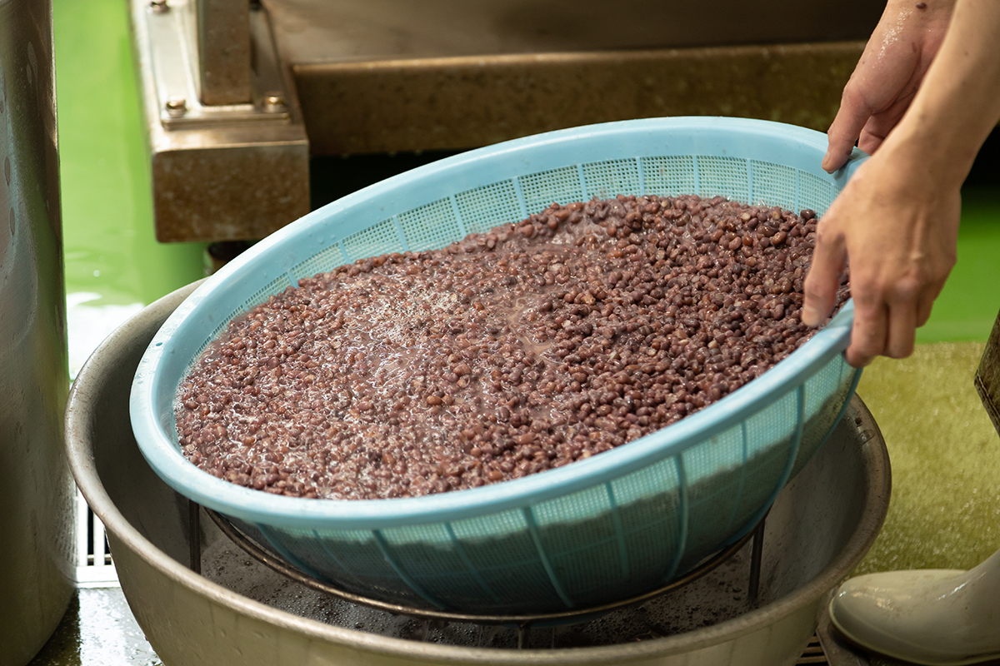
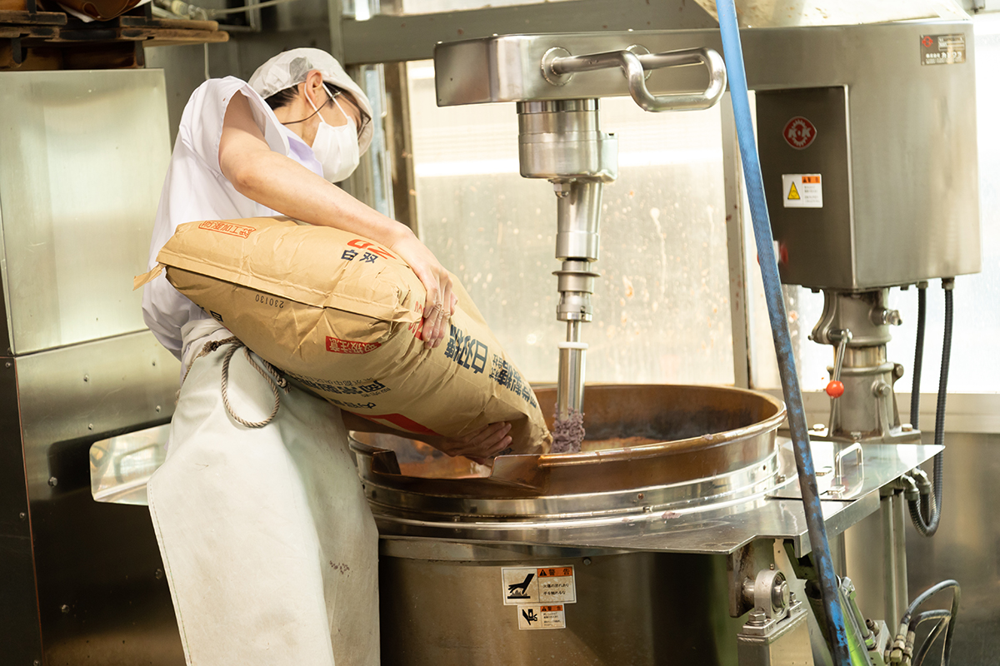
Котлов с пастой в день варят пять, и сладостей делают ровно столько, на сколько хватит пасты. Круглосуточной работы здесь нет: сотрудники трудятся в нормальном человеческом ритме, и это тоже часть стиля «Куя».
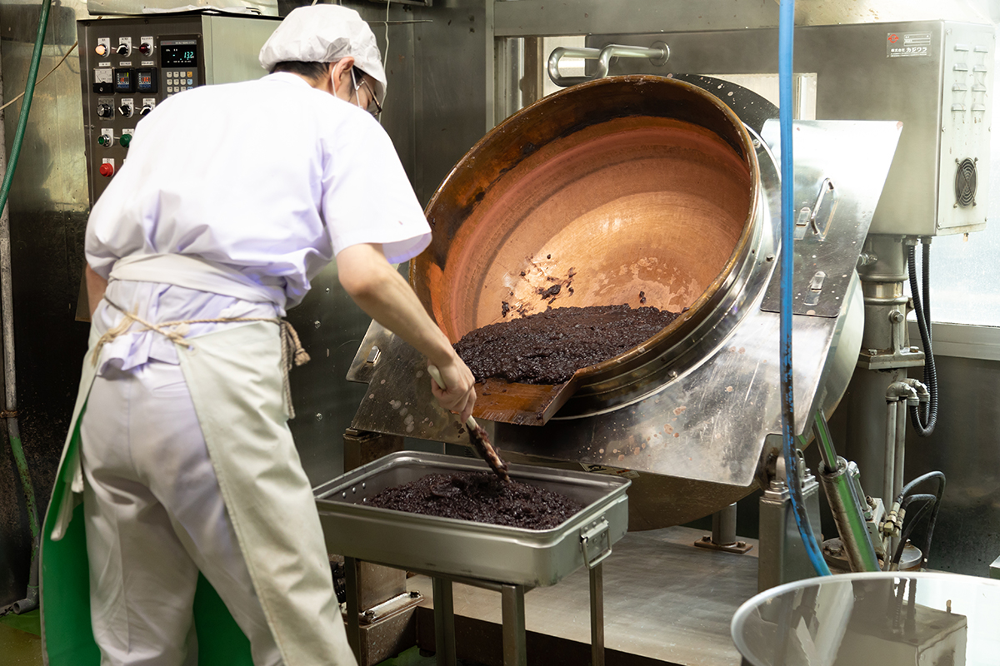
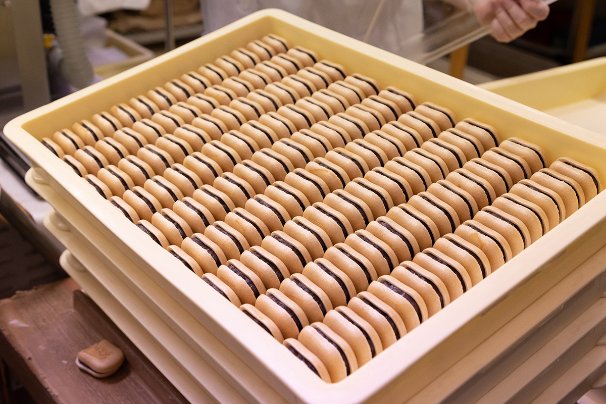
Хозяин
Сто лет и чуть-чуть нового
Нынешний хозяин «Куя» потомок второго владельца. Когда в 2023 году его спросили о секрете долголетия лавки, он смутился: в мире японских сладостей есть дома, которым по четыреста и пятьсот лет. Но именно у него стоит спросить, почему лавка живёт уже сто лет.
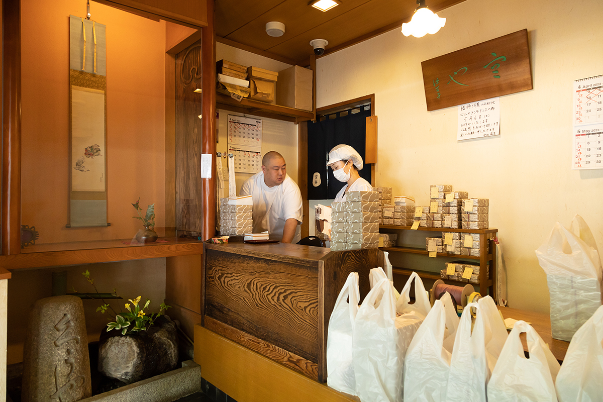
«Я не стремлюсь сделать что-то новое любой ценой. Просто хочу, чтобы как можно больше людей узнали, какая вкусная бобовая паста»
хозяин «Куя»
Он вырос в семье кондитеров, и сладости с пастой были его обычным полдником. «Торты мне никто не запрещал, и простые конфеты я ел. Но всё равно считаю, что наша паста самая вкусная», говорит он.
У лавки очередь каждый день, сладости разбирают мгновенно. И всё же хозяин заметил, что вокруг становится всё больше молодых людей, которые японских сладостей ни разу не пробовали. Покупатели «Куя» приходят за «тем самым вкусом», а пасты лавка может сварить немного, поэтому для новой публики он придумал отдельную марку «Сораиро». Она соединяет пасту из адзуки с европейской выпечкой. Самый популярный её продукт «TSUKI»: паста между двумя мягкими печеньями, которые рассыпаются во рту. Хозяин подбирал его вместе с кондитером европейской школы, подгоняя вкус и даже текстуру пасты под печенье. Паста в «Сораиро» своя, на сахаре с ещё более крупными кристаллами, чем в «Куя».
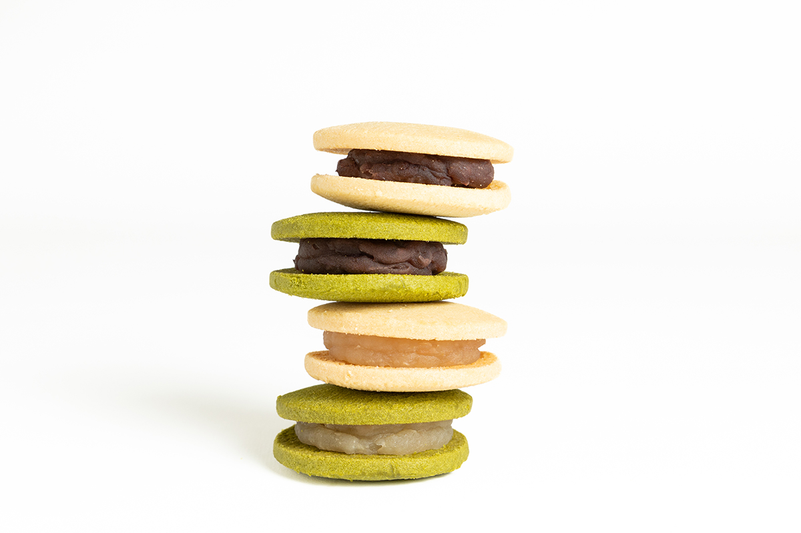
«Сораиро» одной из первых стала продавать пасту в банках, когда это было ещё редкостью. Покупатели и в «Куя» просили продавать пасту отдельно, но лавке её едва хватает на свои сладости, и новая марка смогла ответить на эту просьбу.
Последней новинкой к 2023 году стала паста со специями, которую хозяин сделал вместе с лавкой специй «Косиндо» в районе Дзиюгаока. Её владелец, по словам хозяина, бобовую пасту не любит, поэтому смесь специй он составил для себя, «для того, кто пасту не любит», а хозяин уже под неё подобрал пасту.
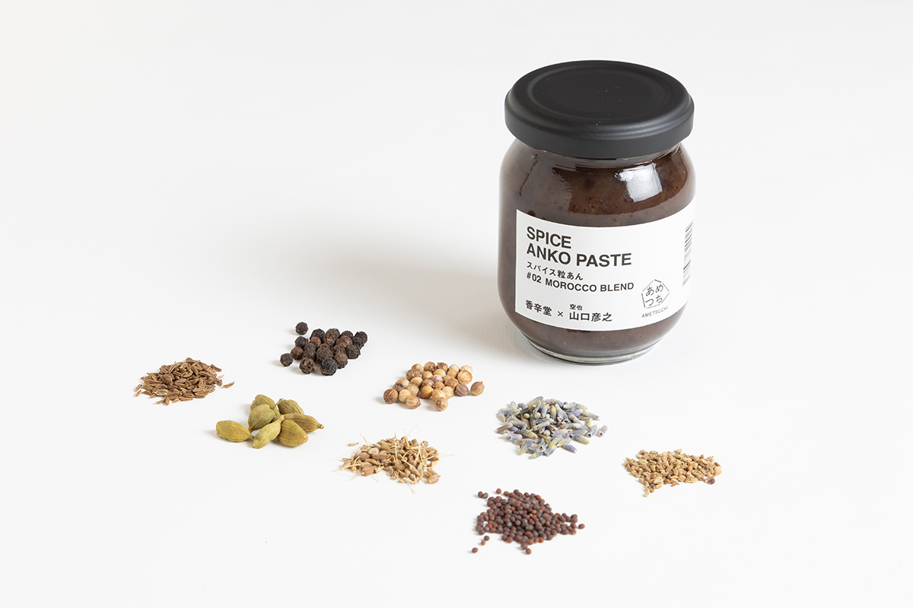
На вопрос, что в старой лавке трогать нельзя, хозяин отвечает прямо.
«Есть вещи, которые менять нельзя: хорошие продукты, аккуратная работа. На этом стоит „Куя“. Вкус монаки, думаю, почти не изменился с самого начала. Но газовые котлы мы заменили индукционными, начинку закладывает машина. Если вкус не страдает, а людям легче работать, это хорошо. Делать всё вручную совсем не обязательно»
хозяин «Куя»
Модные слова вроде органики и устойчивого развития его не слишком занимают. Моды, по его мнению, сильны, но мало что из них становится классикой. Не терять главного, не гнаться за эффектом и работать с хорошими продуктами: это долго, но в итоге оценят именно такую работу.
Покупка
Как достать монаку «Куя»
О том, что монаку нужно заказывать заранее, в Гиндзе знают все. Окрестные магазины покупают её коробками в подарок постоянным клиентам, а некоторые кафе гордятся тем, что подают её к чаю. Коробка «Куя» в подарок всегда встречает радостное «какая прелесть!».
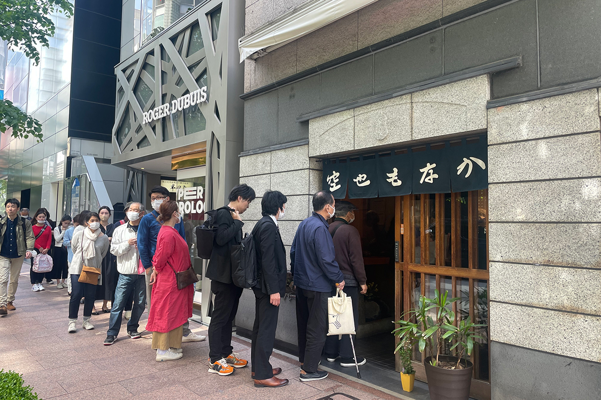
Кроме монаки здесь продают свежие сладости, например «Куя-дзоси» в виде старинной японской книги. А те самые «Куя-моти» из романа Сосэки бывают в продаже только два раза в год, на ограниченный срок.
«Куя»
- Адрес
- Токио, район Тюо, Гиндза, 6-7-19
- Телефон
- +81 3-3571-3304
- Часы работы
- 10:00–17:00, в субботу до 16:00
- Выходные
- воскресенье и праздничные дни
- Цены / Вход
- «Куя-монака», 10 штук для себя, 1100 иен (2023)
«Косиндо»
- Адрес
- Токио, район Мэгуро, Дзиюгаока, 1-25-20
- Телефон
- +81 3-6770-7173
- Часы работы
- 11:00–19:00
- Выходные
- среда и четвёртый четверг месяца, бывают и другие
- Сайт
- koushindo.net
Фото: Асами Эндо.